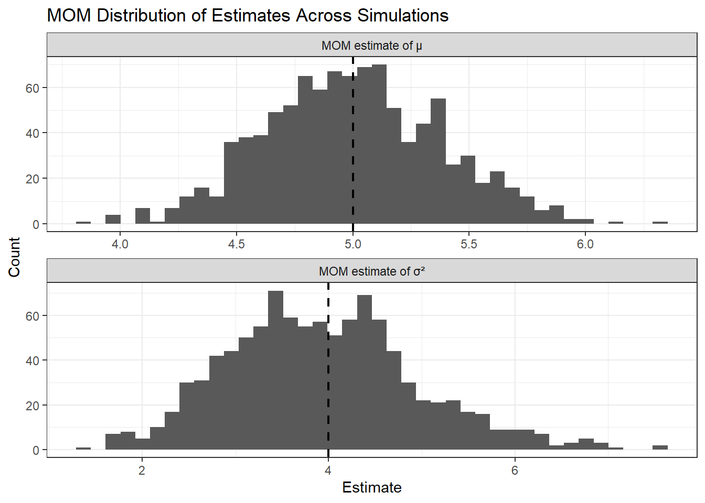
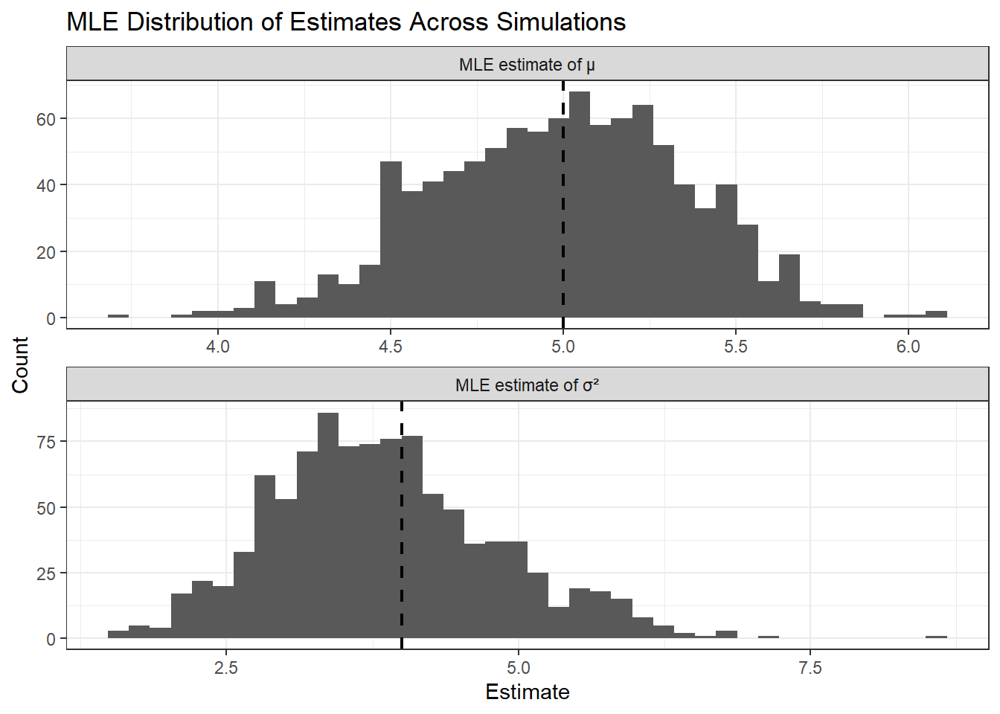

A point estimate is a single number that used to estimate an unknown value in a population. Usually, since populations are often very large, it is usually impossible (or extremely difficult) to collect data from every single individual. Because of this, we take a sample and use it to make a reasonable guess about the population.
For example, if we want to know the average height of all students at a university, we wouldn’t measure everyone. Instead, we would measure a smaller group and use their average as an estimate of the true population average.
Point estimation is the process of using sample data to produce this single estimate.
What Makes a Good Point Estimate?
Not all estimates are equally good. A strong estimator should have three key properties:
It should be unbiased
It should be precise
It should be accurate
These ideas describe different aspects of an estimator’s performance.
What do they mean??
Precision
Precision refers to how consistent an estimator is when we repeat the same experiment multiple times.
Imagine taking many different samples from the same population and calculating an estimate each time. If all those estimates are very close to each other, then the estimator is precise.
So: - High precision - estimates are tightly grouped together
- Low precision - estimates are spread out
Precision is about variability. The less variation there is between estimates, the more precise the estimator is.
Bias
Bias tells us whether our estimator is systematically off from the true value.
If we repeatedly take samples and the average of all our estimates is equal to the true population value, then the estimator is unbiased.
If the estimates tend to be consistently too high or too low, then the estimator is biased.
So: - Unbiased - correct on average
- Biased - consistently off in some direction
Bias is about correctness on average, not just one sample.
Accuracy
Accuracy combines both precision and bias.
An estimator is accurate if: - It is close to the true value (low bias), and
- It doesn’t vary too much (high precision)
This is important because:
You can have an unbiased estimator that is very spread out (not reliable)
You can also have a very precise estimator that is consistently wrong (biased)
A good estimator balances both.
Methods of Finding Point Estimates
There are two main methods we studied for finding point estimates:
Method of Moments (MOM)
Maximum Likelihood Estimation (MLE)
Both methods use the same data but approach the problem in different ways.
Method of Moments (MOM)
This approach says to equate the first k sample moments to the first k population moments and solve for unknown parameters.
Steps:
Determine how many parameters we need to solve for.
Calculate summary values from our sample data (like the average or average of squared values)
Match these to what the distribution says those values should be (sample moments=population moments)
Then we solve for the unknown parameters
The idea behind this method comes from the fact that, with enough data, sample averages tend to get close to the true population values.
MOM is often easier to understand and compute, but it doesn’t always give the best estimates.
Example:
I used a Normal distribution example to demonstrate how the Method of Moments can be applied. For each simulated sample, I computed the sample mean and used the relationship between the first and second moments to obtain an estimate of the variance. These correspond to matching the sample moments to the population moments implied by the Normal distribution.
I repeated this process over 1000 simulations to evaluate how the MOM estimates behave, and summarized the results by computing their average values, bias, and variability. The histograms show the distribution of the MOM estimates across simulations, while the vertical dashed lines indicate the true parameter values for comparison.
library(tidyverse) # install and load tidyverse package
── Attaching core tidyverse packages ──────────────────────── tidyverse 2.0.0 ──
✔ dplyr 1.1.4 ✔ readr 2.1.6
✔ forcats 1.0.1 ✔ stringr 1.6.0
✔ ggplot2 4.0.1 ✔ tibble 3.3.1
✔ lubridate 1.9.4 ✔ tidyr 1.3.2
✔ purrr 1.2.1
── Conflicts ────────────────────────────────────────── tidyverse_conflicts() ──
✖ dplyr::filter() masks stats::filter()
✖ dplyr::lag() masks stats::lag()
ℹ Use the conflicted package (<http://conflicted.r-lib.org/>) to force all conflicts to become errors
true_mu<-5# true meantrue_sigma<-2# true sdn<-30# sample sizen_sims<-1000# number of simulationsset.seed(42)# tibble resultsmom_results<-tibble(sim =1:n_sims,mom_mu =NA,mom_var =NA)#loop through simulations and store estimates in respective variablesfor(i in1:n_sims){ x <-rnorm(n, mean = true_mu, sd = true_sigma) mom_results$mom_mu[i] <-mean(x) mom_results$mom_var[i] <-mean(x^2) -mean(x)^2}#numerical summarymom_summary<- mom_results |>summarise(true_mu = true_mu,true_var = true_sigma^2,mom_mean_mu =mean(mom_mu),mom_mean_var =mean(mom_var),bias_mu =mean(mom_mu) - true_mu,bias_var =mean(mom_var) - true_sigma^2,variance_mu =var(mom_mu),variance_var =var(mom_var) )mom_summary
plot_dat<- mom_results |># reshape with longerpivot_longer(cols =c(mom_mu, mom_var),names_to ="parameter",values_to ="estimate" ) |>mutate( # columns for categoriesparameter =factor( parameter,levels =c("mom_mu", "mom_var"),labels =c("MOM estimate of μ", "MOM estimate of σ²") ) )# results tibble for vline visualisationtruth_dat<-tibble(parameter =c("MOM estimate of μ", "MOM estimate of σ²"),truth =c(true_mu, true_sigma^2))#plot using histogramggplot(plot_dat, aes(x = estimate)) +geom_histogram(bins =40) +geom_vline(data = truth_dat, aes(xintercept = truth), linetype ="dashed", linewidth =0.8) +facet_wrap(~ parameter, scales ="free", ncol =1) +labs(title ="MOM Distribution of Estimates Across Simulations",x ="Estimate",y ="Count" ) +theme_bw()

Maximum Likelihood Estimation (MLE)
MLE takes a different approach. Instead of matching summaries, it asks:
Which parameter value makes the data observed most likely to happen?
We imagine different possible values for the parameter and choose the value that best explains the data.
Steps to computationally do it in R:
Write out the likelihood function
Take the log-likelihood
Create a function that returns the negative log-likelihood
Handle parameter constraints by transforming them
Choose starting values
Use the optimizing function optim() to find the parameter values that minimize it
Transform parameters back
Check the solution
MLE can sometimes be more complicated to compute.
Example:
I used a basic Normal distribution example to show how MLE can be computed with optim(). In the negative log-likelihood function, I transformed sigma using exp() so that the optimizer only searches over positive standard deviation values. After optimizing, I transformed the estimate back by exponentiating it and squaring it to report the variance estimate.
# function returning negative log-likelihoodneg_log_lik<-function(par, x) { mu<- par[1] sigma<-exp(par[2])-sum(dnorm(x, mean = mu, sd = sigma, log =TRUE))}mle_results<-tibble(sim =1:n_sims,mle_mu =NA,mle_var =NA )for(i in1:n_sims){ x<-rnorm(n, mean = true_mu, sd = true_sigma) # random values# optimise with optim() fit<-optim(par =c(0, 0),fn = neg_log_lik,x = x)# store results in variables-values are transformed back mle_results$mle_mu[i]<- fit$par[1] mle_results$mle_var[i]<-exp(fit$par[2])^2}# numerical summarymle_summary<- mle_results |>summarise(true_mu = true_mu,true_var = true_sigma^2,mle_mean_mu =mean(mle_mu),mle_mean_var =mean(mle_var),bias_mu =mean(mle_mu)-true_mu,bias_var =mean(mle_var)-true_sigma^2,variance_mu =var(mle_mu),variance_var =var(mle_var) )mle_summary
plot_dat<- mle_results |># reshape with pivot_longerpivot_longer(cols =c(mle_mu, mle_var),names_to ="parameter",values_to ="estimate" ) |>mutate(parameter =factor( parameter,levels =c("mle_mu", "mle_var"),labels =c("MLE estimate of μ", "MLE estimate of σ²") ) )# results tibble for vline visualisationtruth_dat<-tibble(parameter =c("MLE estimate of μ", "MLE estimate of σ²"),truth =c(true_mu, true_sigma^2))# plotggplot(plot_dat, aes(x = estimate)) +geom_histogram(bins =40) +geom_vline(data = truth_dat,aes(xintercept = truth),linetype ="dashed",linewidth =0.8) +facet_wrap(~ parameter, scales ="free", ncol =1) +labs(title ="MLE Distribution of Estimates Across Simulations",x ="Estimate",y ="Count" ) +theme_bw()

Comparing Estimators
Since different methods can give different answers, an important question is:
Which estimator is better?
To answer this, we compare estimators using:
Bias (how correct it is on average)
Variance (how spread out it is)
Accuracy (combining both ideas)
However, there can be tradeoff between bias and variability: An estimator that is perfectly unbiased might still be a bad choice if it varies too much from sample to sample.
Key Insight from Practice
When working through examples and simulations, you can infer that:
Some estimators are less variable but slightly biased
Others are unbiased but highly variable
This means that the “best” estimator is not always obvious. Instead, we have to think about what matters more in a given situation: - Do you want…consistency? correctness on average? or the best overall performance?
This is why it is important to evaluate estimators from multiple angles.
Conclusion
In this study, I:
Explained what point estimation is and why it is important
Defined precision, bias, and accuracy
Compared two major estimation methods (MOM and MLE)